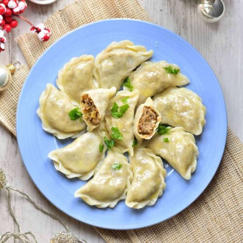

Mushroom and Cabbage Dumplings

Description
Grannys traditional recipe for pierogi with cabbage and mushrooms. These dumplings are most associated with Christmas and Christmas Eve, but they also taste great on every other day.
Ingredients
- for the mushroom and cabbage filling:
- 2 tablespoons of vegetable oil
- 15g of butter
- onion, finely chopped
- 250g mushrooms, finely chopped
- 300g (drained weight) sauerkraut (half a 900g jar)
- for the pierogi dough:
- 360g plain flour
- 240g hot but not boiling water
- 1 egg
- 3/4 tablespoon of salt
- 1 tablespoon of vegetable oil
- for the topping:
- two large onions, sliced
- 20mg butter
Steps
- To make the filling, rinse the sauerkraut in a sieve, under plenty of running water. Drain well. Heat 1 tablespoon of the vegetable oil in a large frying pan and add the onion and a pinch of salt. Cook, stirring often, over a medium heat for 5 minutes. Add the mushrooms and cook for a further 5 minutes. Now add the drained sauerkraut and cook for a further 10 minutes, until soft. There should be no liquid in the pan. Season to taste with salt and pepper. Set aside to cool.
- To make the dough, measure the flour into a large bowl and make a well in the centre.
- Crack the egg into the well with the hot water, salt and oil. Quickly beat the wet ingredients with a fork then slowly incorporate the flour, until a soft dough forms.
- Knead for about 8 minutes until smooth and elastic, adding a little extra flour if it sticks. Divide the dough into thirds and keep covered
- Roll the first third out on a lightly floured surface, until it is an even 3mm thick. Using a plain, round 7cm cutter, stamp out about 12 circles. Keep the finished circles covered with a slightly damp tea towel to prevent them drying out. Repeat with the remaining two lots of dough to make about 36 circles.
- To fill, cup a circle in your palm, and put a packed teaspoonful of filling in the middle.
- Lightly wet the edges with water and pinch together tightly to seal. You can crimp with a fork if you wish.
- Keep the surface dusted with flour and cover the finished dumplings with a tea towel to prevent them drying out.
- To make the topping, soften the onions in the butter, with a pinch of salt, for 15 minutes, until soft and golden. Turn up the heat and cook for a few minutes more, until caramelised
- To cook the pierogies, bring a large saucepanful of lightly salted water to the boil. Add half the pierogi and simmer for 5 minutes, stirring now and then to prevent sticking. Drain with a slotted spoon, transfer to a plate and simmer the remaining pierogies.
- Serve the pierogies as is, with the onion topping spooned over, or heat the remaining oil and the butter in a large frying pan and brown the pierogies on both sides, in batches. Spoon the onions over to serve.